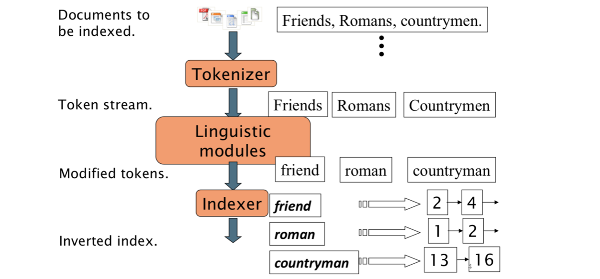
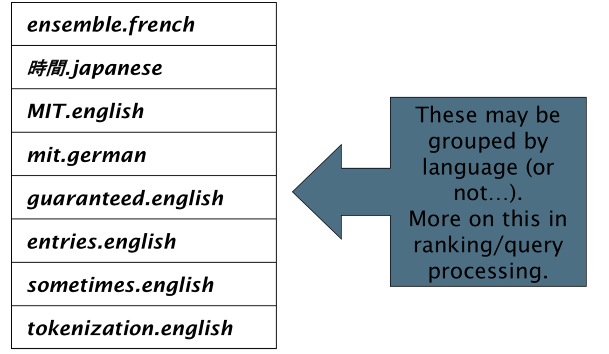

Parsing a document
- Complications: Format/language
- Documents being indexed can include docs from many different languages
- A single index may have to contain terms of several languages. E.g. id in English and French
- Sometimes a document or its components can contain multiple languages/formats
- French email with a German pdf attachment.
- What is a unit document?
- A file?
- An email? (Perhaps one of many in an mbox.)
- An email with 5 attachments?
- A group of files (PPT or LaTeX as HTML pages)
- Documents being indexed can include docs from many different languages
Tokens and Terms
Tokenization
-
Input: “Friends, Romans and Countrymen”
-
Output:
- Friends
- Romans
- Countrymen
-
A token is an instance of a sequence of characters
-
Each such token is now a candidate for an index entry, after further processing
Issues
Issues in tokenizaiton
-
Finland’s capital => Finland? Finlands? Finland’s?
-
Hewlett-Packarda 惠普=> Hewlett and Packard as two tokens? 分开意思完全变了
- state-of-the-art: break up hyphenated sequence.
- co-education
- lowercase, lower-case, lower case ?
- It can be effective to get the user to put in possible hyphens连字符
-
San Francisco: one token or two?
Issues in Numbers
-
Dates, postcodes, phone numbers etc. in different forms
- 3/20/91 Mar. 12, 1991 20/3/91
- 55 B.C.
- B-52
- My PGP key is 324a3df234cb23e
- (800) 234-2333
- 12,334,556 ‘,’ issues
-
Often have embedded spaces
-
Older IR systems may not index numbers
- But often very useful: think about things like looking up error codes/stacktraces on the web
- (One answer is using n-grams: Lecture 3)
- Will often index “meta-data” separately
- Creation date, format, etc.
Issues in language
- French: L’ensemble => L ? L’ ? Le ?
- German: noun compounds. E.g., Lebensversicherungsgesellschaftsangestellter
- Chinese: no spaces between words. 还有些即使分词还有歧义 E.g.,南京市长江大桥
- Japanse: Dates/amounts in multiple formats
- Arabic (or Hebrew): written right to left, but numbers written left to right
…
Stop words
-
With a stop list, you exclude from the dictionary entirely the commonest words. Intuition:
-
They have little semantic content: the, a, and, to, be
-
There are a lot of them: ~30% of postings for top 30 words
很多系统给了stop words，或者通过token的frequency把高频词加到stop words
-
-
But the trend is away from doing this:
-
Good compression techniques (lecture 5) means the space for
including stopwords in a system is very small
-
Good query optimization techniques (lecture 7) mean you pay little at query time for including stop words.
-
You need them for:
- Phrase queries: “King of Denmark”
- Various song titles, etc.: “Let it be”, “To be or not to be”
- “Relational” queries: “flights to London” vs. “flights from London”
Normolization
Normolization in tokens
-
We need to “normalize” words in indexed text as well as query words into the same form
- E.g., match U.S.A. and USA
-
We most commonly implicitly define equivalence classes of terms by, e.g.,
- deleting periods to form a term § U.S.A., USA => USA
- deleting hyphens to form a term
- anti-discriminatory, antidiscriminatory => antidiscriminatory
Normolization in languages
- Accents: e.g., French résumé vs. resume.
- Umlauts: e.g., German: Tuebingen vs. Tübingen
- Chinese: e.g., 简体 vs. 繁體
Case folding
- Reduce all letters to lower case
- exception: upper case in mid-sentence?
- e.g., General Motors
- Fed vs. fed
- SAIL vs. sail
- Often best to lower case everything, since users will use lowercase regardless of ‘correct’ capitalization…
- exception: upper case in mid-sentence?
- Google example:
- Query C.A.T. : #1 result is for “cat” (well, Lolcats) not Caterpillar Inc.
Thesauri and soundex
- Do we handle synonyms and homonyms?
- E.g., by hand-constructed equivalence classes
- car = automobile, color = colour
- We can rewrite to form equivalence-class terms
- When the document contains automobile, index it under car- automobile (and vice-versa)
- Or we can expand a query
- When the query contains automobile, look under car as well
- E.g., by hand-constructed equivalence classes
- What about spelling mistakes?
- One approach is soundex, which forms equivalence classes
of words based on phonetic heuristics - deal with :
- noise input 打错了
- 打太快，没打空格
- One approach is soundex, which forms equivalence classes
Lemmatization
-
Reduce inflectional/variant forms to base form
-
E.g., am, are, isa => be
car, cars, car’s, cars’ => car
-
- the boy’s cars are different colors => the boy car be different color
- Lemmatization implies doing “proper” reduction to dictionary headword form
Stemming
-
Reduce terms to their “roots” before indexing
-
“Stemming” suggest crude affix chopping
-
language dependent
-
e.g., automate(s), automatic, automation all reduced to automat. 即使automat不是一个真实存在的词，也没关系 => 词根
-
- Do stemming and other normalizations help?
- English: very mixed results. Helps recall for some queries but harms precision on others
- E.g., operative (dentistry) ⇒ oper
- Definitely useful for Spanish, German, Finnish, …
- 30% performance gains for Finnish!
- English: very mixed results. Helps recall for some queries but harms precision on others
Dictionary entries – first cut
